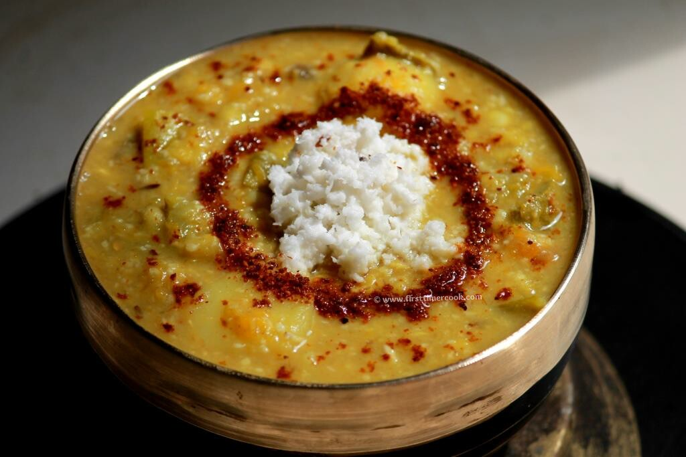
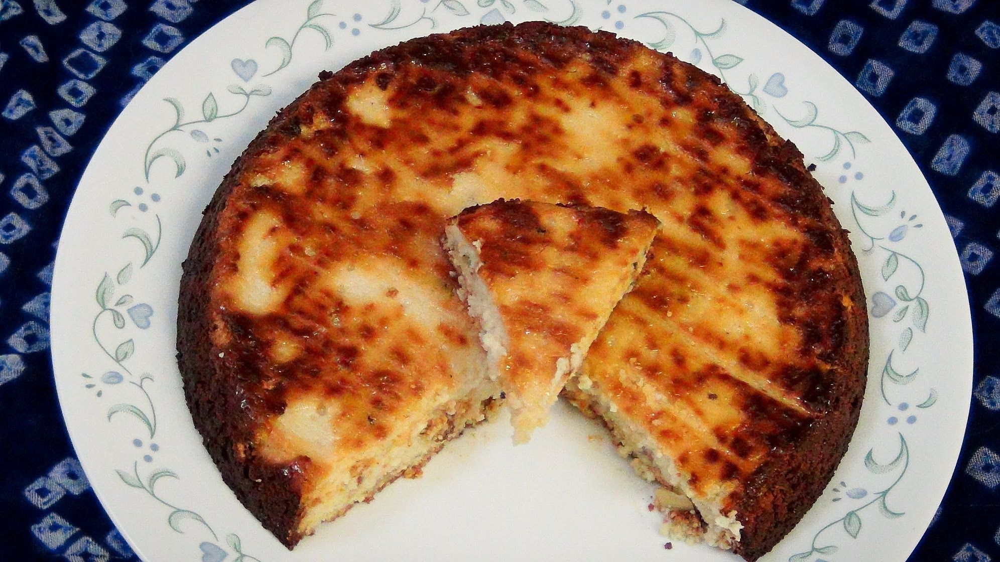

Dalma
Ingredients: Split yellow lentils, assorted vegetables (potatoes, brinjal, raw banana, pumpkin), ginger, cumin seeds, bay leaves, turmeric powder, ghee, grated coconut, salt.
Instructions: Cook the lentils with turmeric and water until soft.
Add chopped vegetables and cook until tender.
In a separate pan, heat ghee and temper with cumin seeds, bay leaves, and ginger.
Pour this tempering over the lentil-vegetable mixture.
Garnish with grated coconut and serve hot.
Pakhala Bhata

Ingredients: Cooked rice, water, yogurt, salt, roasted cumin powder, mint leaves, fried fish (optional).
Instructions: Soak cooked rice in water and yogurt mixture.
Let it ferment for a few hours or overnight.
Add salt and roasted cumin powder before serving. Garnish with mint leaves.
Serve with fried fish if desired.
Chhena Poda
Ingredients: Fresh chhena (cottage cheese), semolina, sugar, cardamom powder, cashew nuts, raisins, ghee.
Instructions: Mix fresh chhena, semolina, sugar, and cardamom powder into a smooth batter.
Add chopped cashew nuts and raisins.
Grease a baking dish with ghee and pour the batter into it.